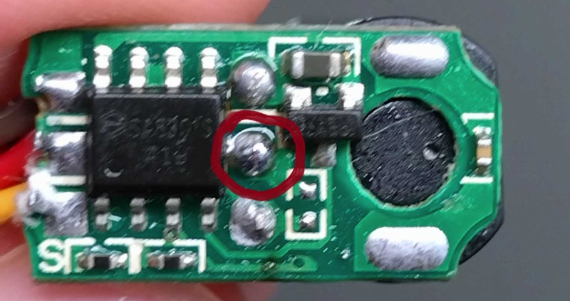
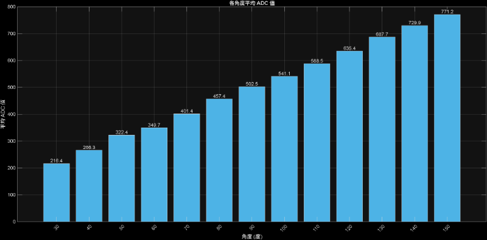

PTZ <<
Previous Next >> Brython
angle2Servo_ADC_Data
divide SG90 and using a electric wire to contect Variable resistor

Code
#include<Servo.h>
Servo myservo;
int pos = 0;
void setup(){
Serial.begin(115200);
myservo.attach(PA0);
delay(1000);
}
void loop() {
for (pos = 60; pos <= 150; pos +=30) {
myservo.write(pos);
delay(1000);
myservo.detach();
Serial.print(pos);
Serial.print(",");
Serial.println(analogRead(PA7));
delay(100);
myservo.attach(PA0);
}
for (pos = 120; pos >= 30; pos -= 30) {
myservo.write(pos);
delay(1000);
myservo.detach();
Serial.print(pos);
Serial.print(",");
Serial.println(analogRead(PA7));
delay(100);
myservo.attach(PA0);
}
}
Result
/downloads/servo_angle_ADC.txt
Matlab find avarge
clc
clear
data = readmatrix('C:\Users\light\Desktop\servo_angle_ADC.txt', 'Delimiter', ',');
angle = data(:,1);
ADC = data(:,2);
target_angles = 30:10:150;
% 初始化
mean_ADC = zeros(size(target_angles));
count = zeros(size(target_angles));
for i = 1:length(target_angles)
tgt = target_angles(i);
% 直接用邏輯索引取出符合的 ADC
this_ADC = ADC(angle == tgt);
% 如果有資料
if ~isempty(this_ADC)
% 移除可能的 NaN（
this_ADC = this_ADC(~isnan(this_ADC));
if ~isempty(this_ADC)
mean_ADC(i) = mean(this_ADC);
count(i) = length(this_ADC);
% 顯示原始資料
fprintf('\n角度 %d° 的資料（共 %d 筆）：\n', tgt, count(i));
fprintf('angle = %g, ADC = %g\n', [tgt*ones(count(i),1) this_ADC]');
end
else
fprintf('角度 %d° 無資料\n', tgt);
end
end
% 顯示平均結果
fprintf('\n=== 平均結果 ===\n');
fprintf('角度\t筆數\t平均 ADC\n');
for i = 1:length(target_angles)
if count(i) > 0
fprintf('%d°\t%d\t%.2f\n', target_angles(i), count(i), mean_ADC(i));
else
fprintf('%d°\t0\t無資料\n', target_angles(i));
end
end
% 畫長條圖
figure;
bar(target_angles, mean_ADC, 'FaceColor', [0.3 0.7 0.9]);
xlabel('角度 (度)');
ylabel('平均 ADC 值');
title('各角度平均 ADC 值');
grid on;
set(gca, 'XTick', target_angles, 'XTickLabelRotation', 45);
text(target_angles, mean_ADC, sprintfc('%.1f', mean_ADC), ...
'HorizontalAlignment', 'center', 'VerticalAlignment', 'bottom');
Result

=== 平均結果 ===
角度 筆數 平均 ADC
30° 10 216.40
40° 21 266.29
50° 21 322.38
60° 21 349.71
70° 21 401.43
80° 21 457.38
90° 21 502.48
100° 21 541.10
110° 21 588.48
120° 21 635.43
130° 21 687.71
140° 20 729.90
150° 10 771.20
PTZ <<
Previous Next >> Brython